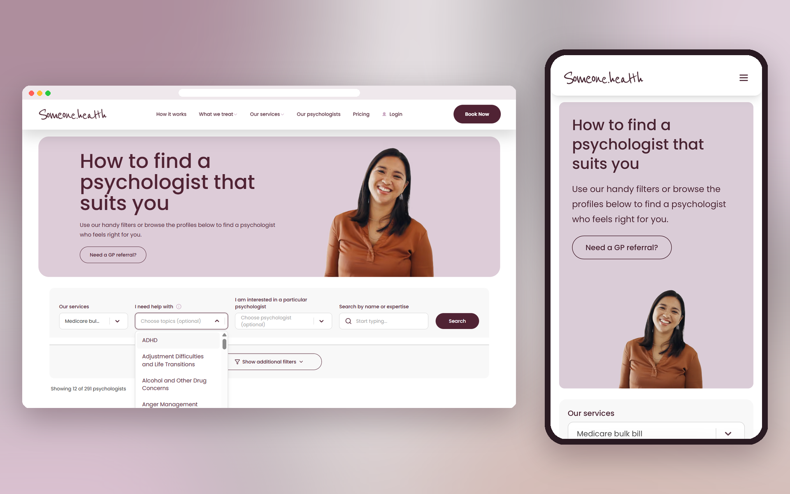
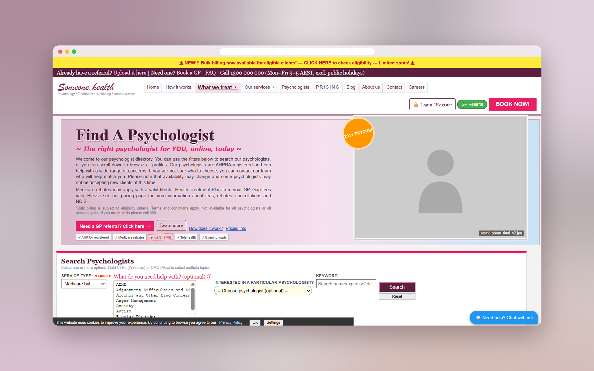
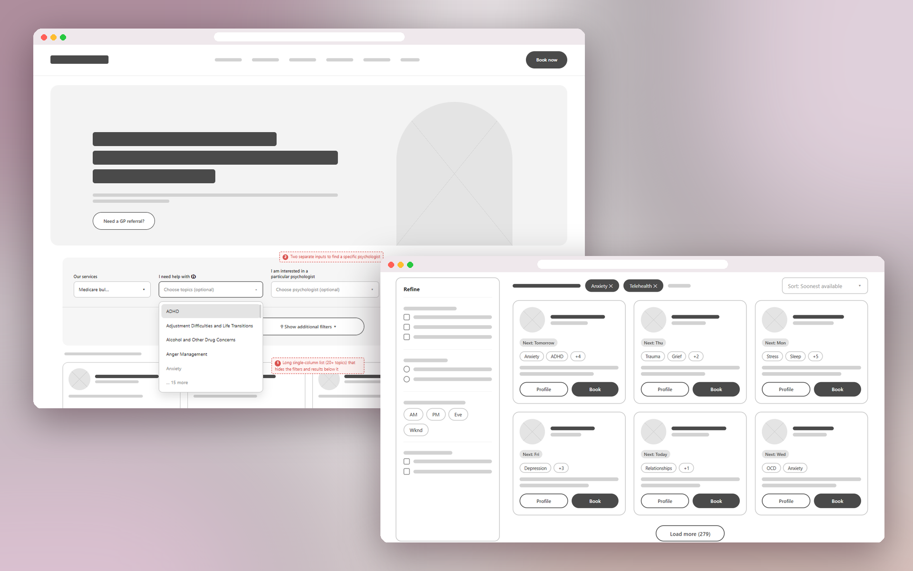
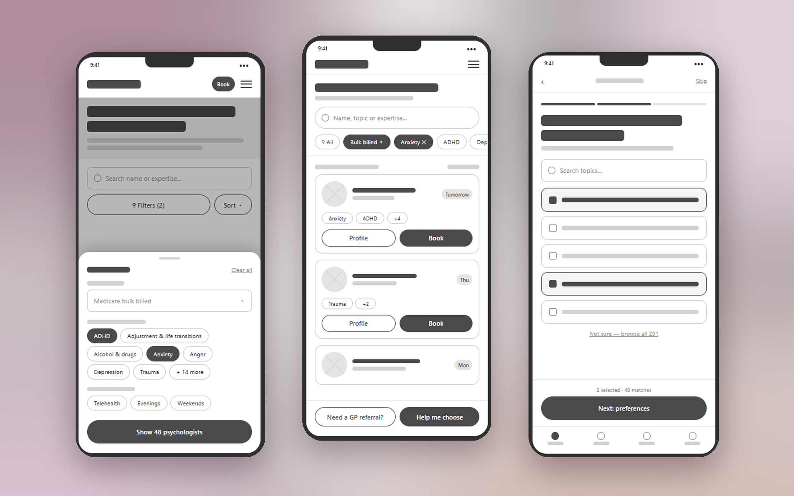
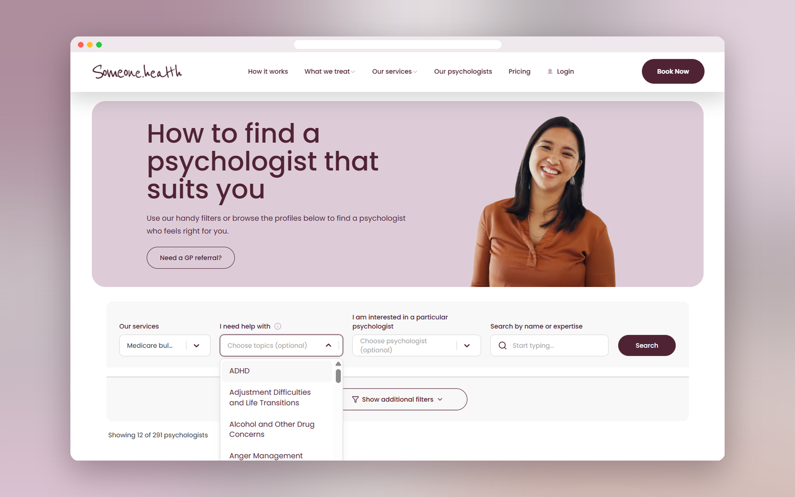
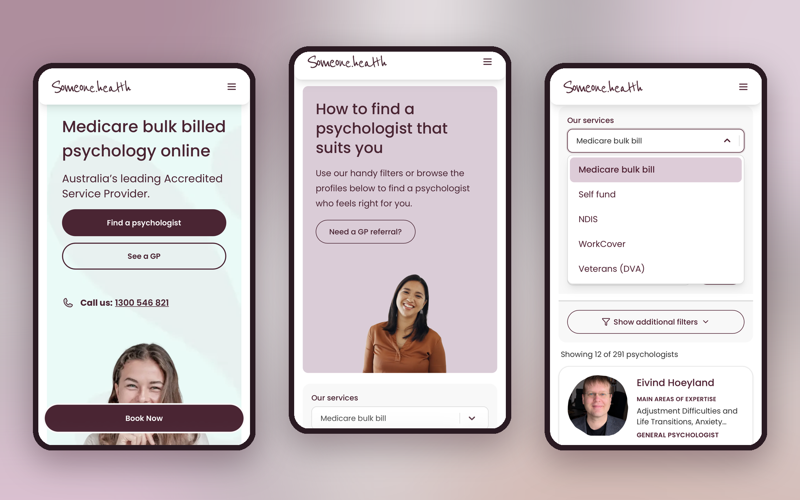
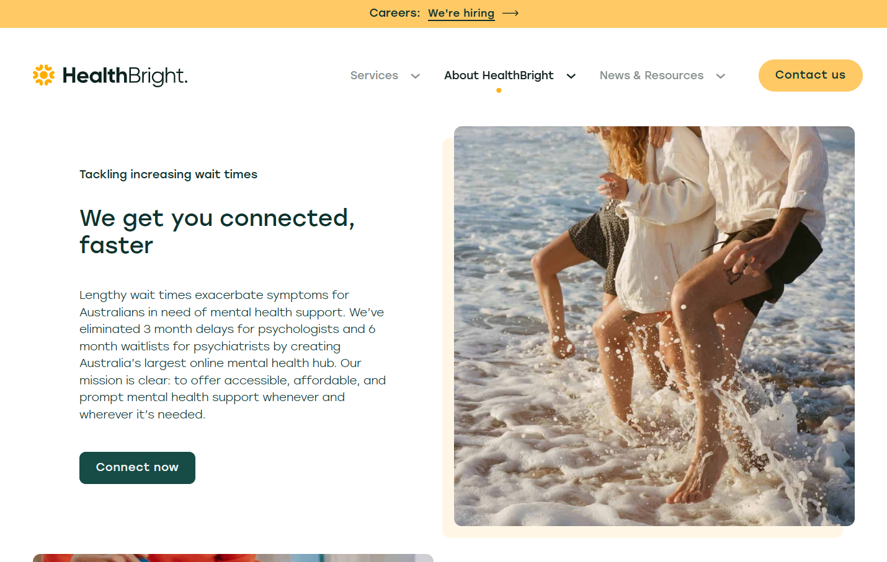

Someone.health’s booking page simplifies finding and scheduling online psychology consultations with professional mental health support.
Overview of the problem
Users found booking mental health appointments overwhelming due to complicated navigation, and limited clarity, creating a need for a simple, accessible, and reassuring booking experience.
Context
Someone.health is an Australian online psychology service that connects individuals with registered psychologists through
- video consultations
- accessible mental health support
- help with anxiety, stress, depression and other life challenges
- available medicare bulk-billing options

Goals
To create a seamless, accessible, and reassuring appointment booking experience that reduces barriers to mental health support while helping users confidently navigate the process.
- Simplify navigation: Organise information into clear, intuitive steps.
- Enhance accessibility: Apply inclusive design principles and readable layouts.
- Build trust: Use a calm, reassuring visual hierarchy to reduce user anxiety.
- Streamline booking: Minimise unnecessary steps when selecting psychologists and scheduling consultations.


I redesigned Someone.health’s appointment booking page to create a more intuitive, accessible, and reassuring experience for users seeking mental health support. This is done by improving information hierarchy, simplifying navigation, and presenting appointment details clearly.
Process & key insights
I followed a user-centred design approach (interviews, 5-second tests, Google Forums) to evaluate and design Someone.health’s appointment booking page, focusing on simplifying the user journey, improving information hierarchy, and making the booking process more accessible and reassuring for individuals seeking mental health support while adhering to WCAG accessibility laws and guidelines.
- Clarity reduces cognitive load: Clear layouts and step-by-step navigation help users make decisions without feeling overwhelmed.
- Accessibility builds inclusion: Readable typography, sufficient contrast, and intuitive interactions support users with diverse needs.
- Trust encourages engagement: A calm, transparent interface helps users feel more comfortable navigating sensitive healthcare services.


Results of what changed
Six months after launch:
Reflection of what I learned
I learnt, through this experience, that designing a healthcare booking page requires more than usability; it also requires empathy. Users seeking mental health support may already feel overwhelmed, so clear instructions, reassuring language, and predictable interactions can help make the process feel less intimidating.
More work

HealthBright
Product conceptI envisioned screens so users feel more comfortable and confident in managing their mental health.

Tapas
Web designI redesigned layouts to be cleaner and energy efficient, helping older devices navigate content more easily.

Resident Evil Requiem
Content moderationI co-designed an age-verification landing page that encourages and guides younger users through content restrictions.